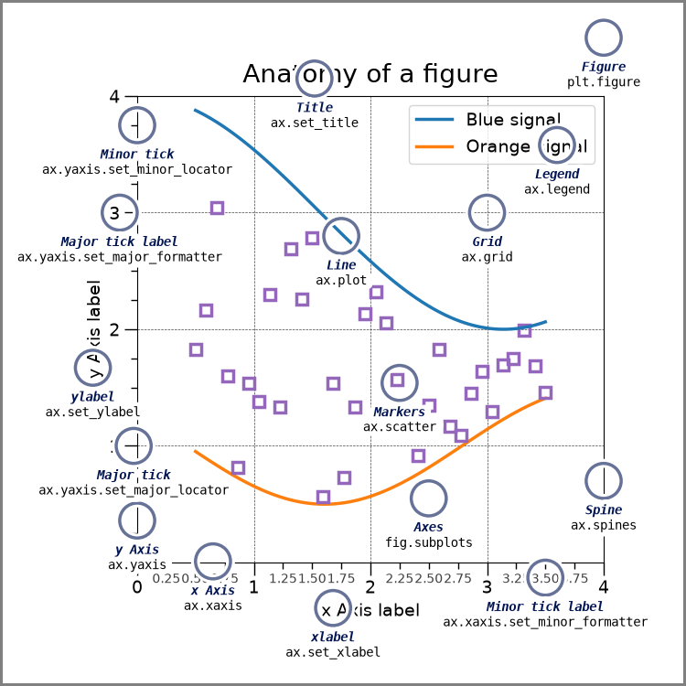

The third topic in this week's lecture is also being presented in notebook format, instead of slides, because it is easier to show how Matplotlib works by using it in practice.
In machine learning, we need to understand and interpret the data before building any models. We can do this with tabular methods: displaying dataframes, computing descriptive statistics (like averages and counts), computing contingency tables, etc. Most of this work can be done using Pandas. After building candidate models, we typically need to assess their suitability for the problem (e.g., by computing metrics like accuracy) and try to find the best model in a set of fitted models (usually by comparing metrics and choosing the model associated with either the lowest value or highest value, depending on the metric).
Visualisation plays a very important role in both Exploratory Data Analysis (before model building) and model validation (during and after model building).
The python data ecosystem includes many plotting packages, but most of them are built upon the foundations provided by Matplotlib, which allows plots to be built up using python code. Typically the procedure is to
figureArtists) to this figureCreating a figure is typically an iterative process, so it is convenient to develop such plots within notebooks. The code to generate the plot can be placed in a code cell, and the default output location is "inline" in the notebook, i.e., directly below its code cell. This is analogous to how text output is placed directly below its code cell.
If you view the actual content of the Notebook file (say, MyNotebook.ipynb)
in a text editor, you will find that the image is base64-encoded in the JSON structure.
Jupyter-lab (or equivalent editor) manages this for you.
The simplest way to get a Matplotlib plot is to use the so-called pyplot interface.
This was designed to be easy to use, especially for programmers who were familiar
with how MATLAB generates plots.
The code will look something like:
1 2 3 4 5 6 7 8 | |
Here is the code used in Matplotlib's Pyplot tutorial.
As you can see, it is possible to generate impressive plots using this API, but it is recommended that, for more complex use cases, the alternative object-oriented API (described below) is used instead.
For greater flexibility, Matplotlib also exposes a full object-oriented API.
This allows programmers greater control over the graphical elements, making it easier to configure subplots, axes, plot types, etc., independently.
The following diagram introduces the major graphics elements in a plot.

Here is the code used in Matplotlib's User Guide.
You are free to choose each API for different plots within a notebook, but it is not advisable to mix the two styles on the same plot in a single cell.